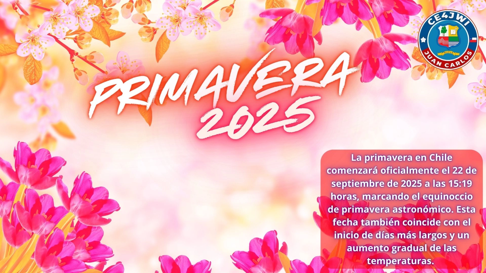

22 de Septiembre 2025

De acuerdo a lo que informó el Servicio Hidrográfico y Oceanográfico de la Armada (SHOA), la primavera 2025 empezará el lunes 22 de septiembre, específicamente a las 15:19 horas.
Además de venir con temperaturas más altas, con la primavera comienza a aumentar la duración del día. Según el sitio Time and Date, este incremento es mayor en los días cercanos al equinoccio, aunque luego siguen extendiéndose pero a un ritmo menor.
Este cambio se beneficiará aún más con el cambio de hora, que se registró el pasado sábado 6 de septiembre.
¿Qué es la primavera meteorológica?
Todo lo antes abordado corresponde a la primavera astronómica, sin embargo, la estación tiene un comienzo distinto desde el punto de vista de la climatología. Según Meteored, esta corresponde a la rama de las ciencias atmosféricas que trabaja con las estadísticas de las variables del tiempo, para analizar cómo cambia o se comporta.
Por ello, se establecen periodos más extensos para medirla. En ese sentido, apuntan que la primavera meteorológica inicia a comienzos de septiembre, y se extiende por todo octubre y noviembre.
¿Qué pasa en el equinoccio de primavera?
El equinoccio es el momento del año en que el Sol cruza el ecuador celeste y la luz llega casi por igual a los dos hemisferios. Ese día, el día y la noche duran prácticamente lo mismo en todo el planeta; de ahí su nombre, que significa "noche igual".
La Tierra viaja alrededor del Sol con su eje inclinado unos 23,5 grados. Esa inclinación, y no la distancia al Sol, es la responsable de las estaciones: cuando un hemisferio se inclina hacia el Sol recibe más luz y vive la primavera y el verano.
La primavera del hemisferio sur
En el hemisferio sur, el equinoccio de septiembre marca la llegada de la primavera: las plantas florecen y vuelven las aves migratorias. En el norte de Chile, en los años con lluvias, la primavera regala el espectáculo único del desierto florido.
En el equinoccio, el Sol sale exactamente por el Este y se oculta exactamente por el Oeste, y sus rayos caen de forma perpendicular sobre el ecuador. Eso se puede comprobar observando la dirección de las sombras al mediodía.
Galería de Imágenes
""
COMO RADIOAFICIONADO REALIZARÉ ESTA ACTIVIDAD A UN SOLO CONTACTO